手工加壳
目标：将代码段加密，以防止IDA等静态工具分析
步骤：
- 添加一个区段（文件大小，区段数量）
- 将原OEP修改为新区段中的地址
- 将代码断加密（异或）
- 在新区段新OEP处，添加解密代码（异或）
TIPS：
- 代码段默认没有可写属性，需要修改。
- 有随机基址属性的程序回重定位代码，一般会去掉这个属性。如果没有去掉，就需要在壳代码中进行重定位
具体实现：
添加区段
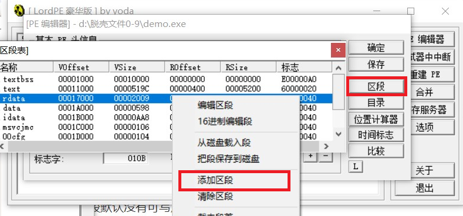
使用LordPE添加区段后程序是无法运行的，因为LordPE不会为程序添加虚拟大小和文件大小。
再使用010Editor向文件中添加数据
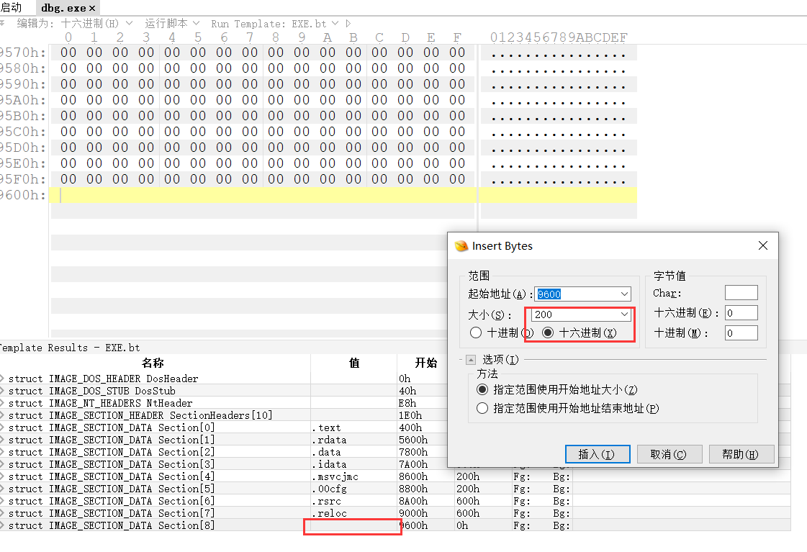
修改OEP
原OEP：00011339
新OEP：00020000
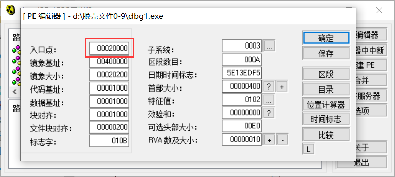
修改新OEP处代码
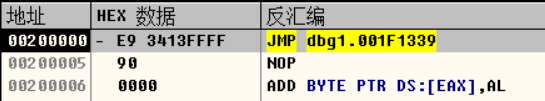
加密代码段
要加密的段信息
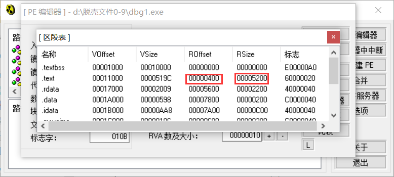
在010Editor中加密代码段
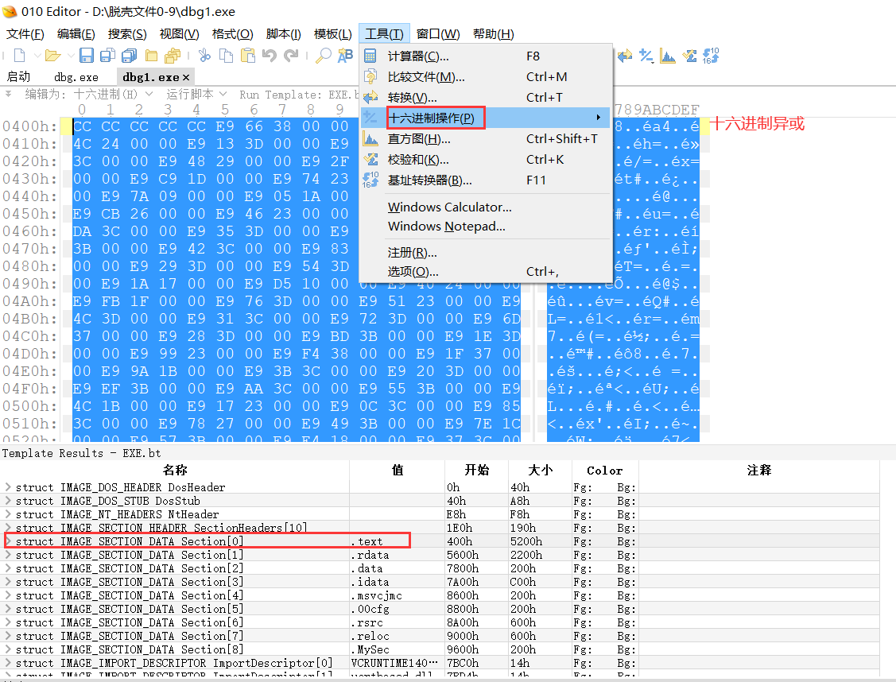
由于代码段有重定位信息，所以加密后应去掉随机基址
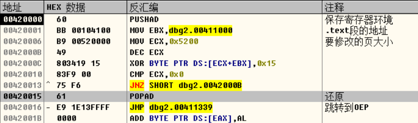
注意，需要修改代码段属性可写
脱壳
脱壳的目的：
- Cracker（破解者）脱壳，解密，破解
- 杀毒引擎（脱壳引擎，反病毒虚拟机）解密，查杀病毒，扫描特征
脱壳的步骤：
- 找到原始OEP
一般来说，找到原始OEP或者跟踪到OEP时，程序都会完成解密操作
- Dump内存到文件
当可执行文件在内存已经完成解密之后，我们将内存中代码数据转储（dump）到文件，就可以进一步分析
- 修复文件（修复IAT，重构导入表）
从内存中转储的内存数据代码有一些与原本文件中的内容是不一致的。比如说IAT表，内存中IAT表会被初始化为函数地址表，而文件中IAT表与INT表内容一致。所以要想程序正常运行一般都需要修复IAT，因为加壳之后程序一般都会自己处理导入表，IAT以及重定位等。
导入表和IAT
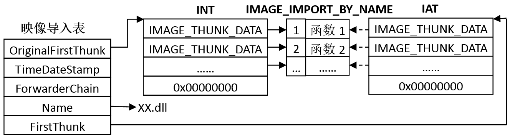
IAT表在文件中保存的是一个RVA数组，每一项都指向了函数字符串结构
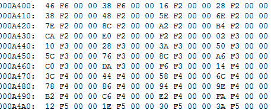
在内存中，这个RVA数组，被修改为函数地址，每一个函数地址就是之前对应的函数字符串的函数
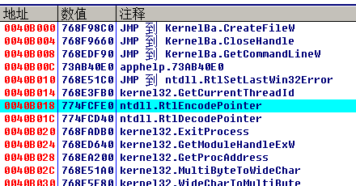
所以从内存中dump出的文件，必须进行修复IAT或导入表
脱自己的壳
找到原始OEP
单步跟踪，很容易找到原始OEP
Dump内存到文件
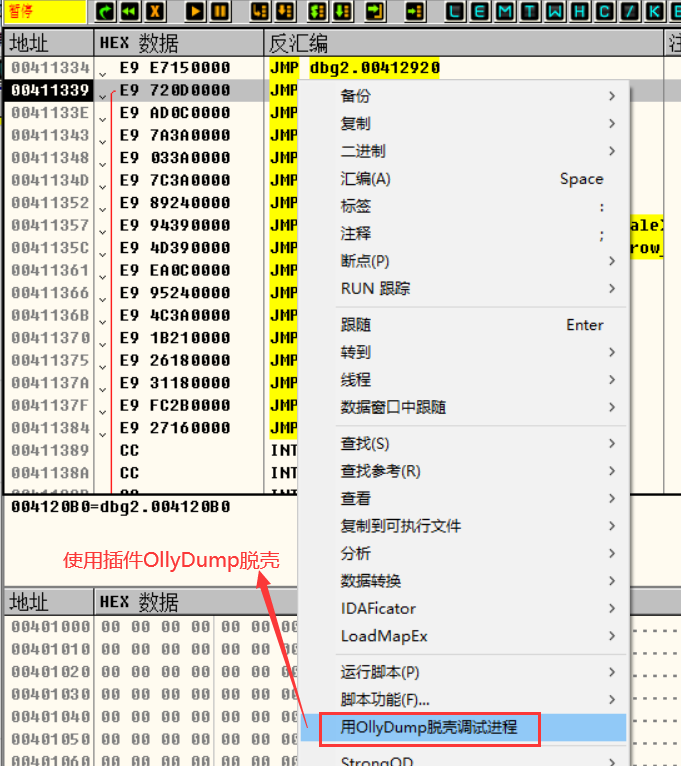
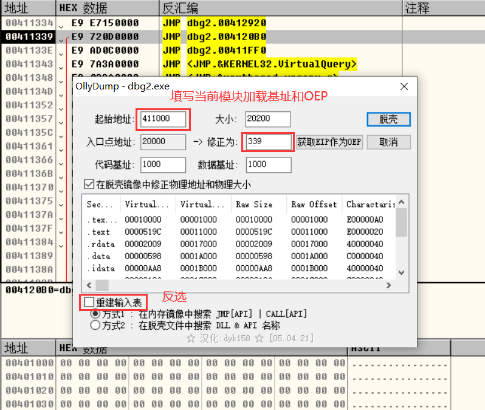
修复IAT或者修复导入表
使用ImportREC修复
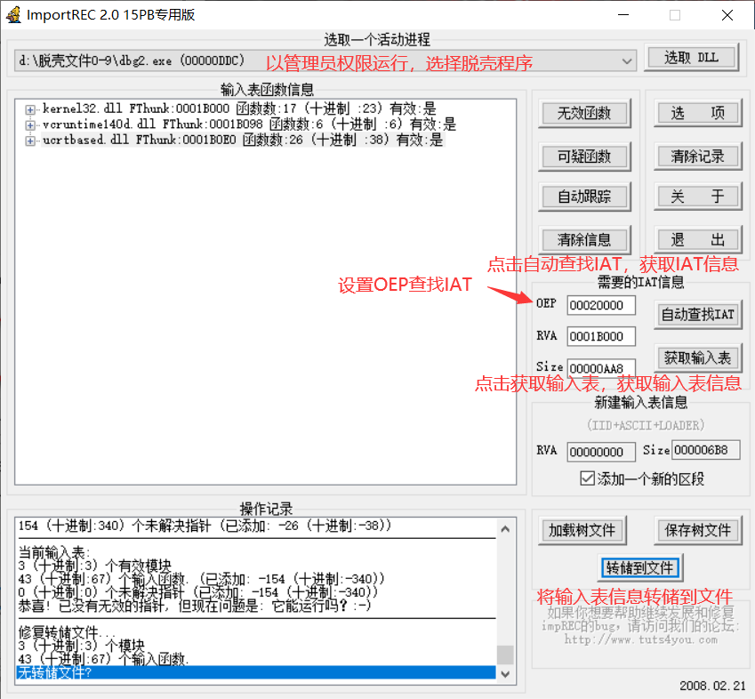
关于压缩算法
- 有损压缩
一个像素点：RGB红绿蓝
一个图片：(3,4,5),(4,5,3),(5,4,3)
压缩后：(4,4,4),3
- 无损压缩
一个文件：0,0,0,0,0,0,0
压缩后：0,7
脱壳三步法
寻找原始OEP
dump内存到文件
修复文件
寻找OEP技巧
堆栈平衡法（ESP定律）
壳代码就像一个函数，进入时会开辟堆栈，保存寄存器环境，退出时会恢复堆栈，恢复寄存器。所以应该时堆栈平衡的，那我们可以在壳代码操作了堆栈后对堆栈设置访问或写入断点，然后运行程序，当断点命中的时候，应该就是退出壳代码的时候。在其附近单步几次，应该就能到达程序的原始OEP
特征定位法
在我们熟悉的程序中，我们可以使用特征来定位程序原始OEP。特征有几种：
- 二进制特征：
比如release版的VS2013是：
OEP入口特征：E8 ?? ?? ?? ?? E9
第一个CALL内的特征：56 57 BF 4E E6 40 BB BE 00 00 FF FF 3B C7
- API特征
比如release版的VS2013的第一个API调用是：
GetSystemTimeAsFileTime
比如VC6.0的第一个API调用是：
GetModuleHandleA
- 编译器特征：
IAT调用不同的表一起生成的调用机器码是不一样的
VS -> call [IAT地址] -> FF 15 ?? ?? ?? ??
delphi -> jmp [IAT地址] -> FF 25 ?? ?? ?? ??
单步跟踪法
这种方法一般使用在分析自己加壳的程序或者是联系分析壳时。
脱壳-0.aspack.exe
寻址OEP
ESP定律
dump内存
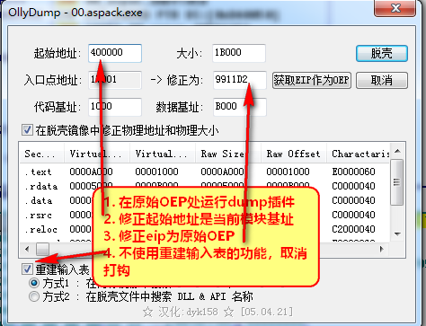
修复文件
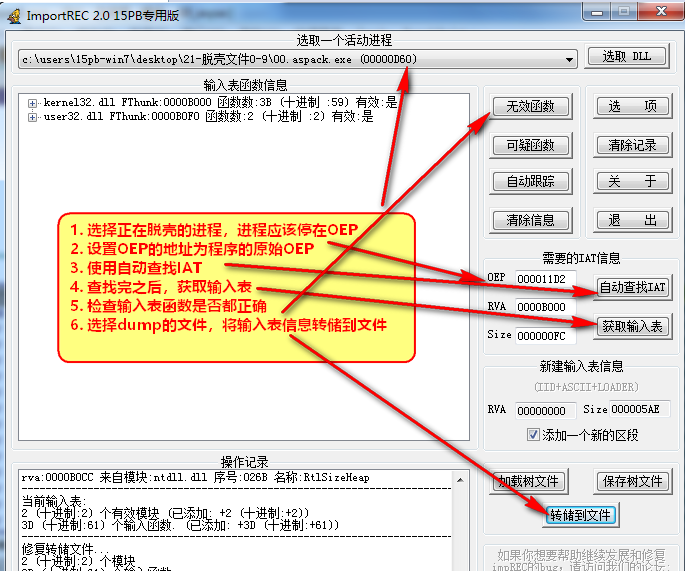
TIP：如果程序有随机基址，脱壳后需要把随机基址标志位置0
壳代码的基本流程
- 保存寄存器环境
- 加载一些必要的API
- 解密代码和数据
- 修复重定位
- 填充IAT
- 恢复寄存器环境
分析壳代码-0.aspack.exe
壳OEP
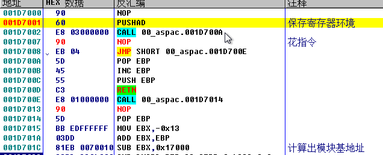
加载必要API
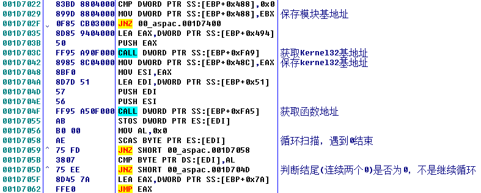
解密解压缩代码
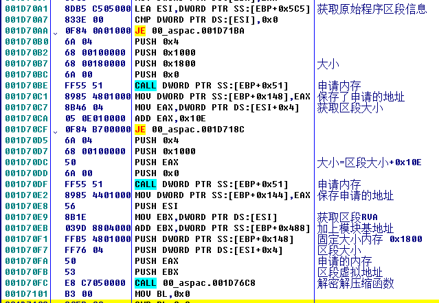
修复重定位
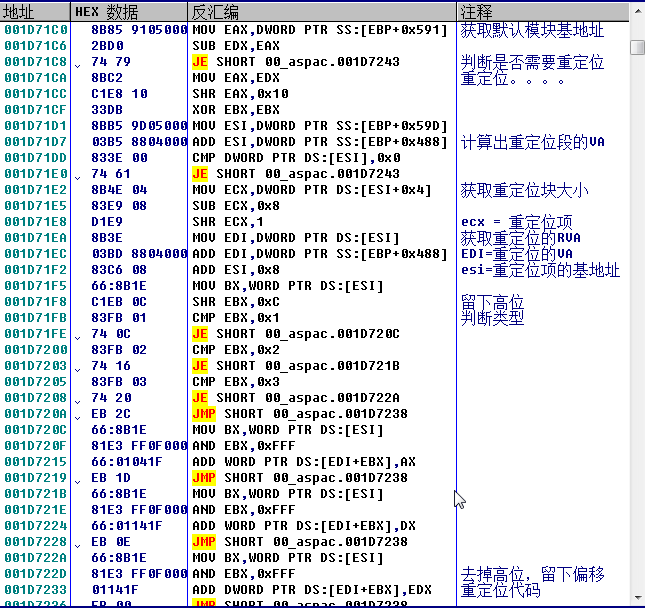
修复重定位的公式：
重定位表中存储两个有用字段：
- 需要重定位的分页地址
- 需要重定位的分页偏移
重定位分为两步：
- 计算出重定位地址，要重定位的地址=模块基地址+分页地址+分页偏移
- 修复要重定位的地址中数据，[要重定位的地址]-默认模块基地址+当前模块及地址
填充IAT
原理：
- 从导入表中获取dll名称
- 从导入表中的INT，获取函数明程或者序号
- 通过GetModuleHandleA或者LoadLibraryA获取模块基地址，通过GetProcAddress获取函数地址
- 将函数地址填充到对应IAT数组中
- 修改属性，跳转原始OEP
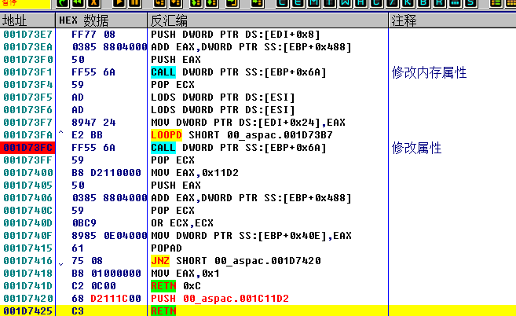